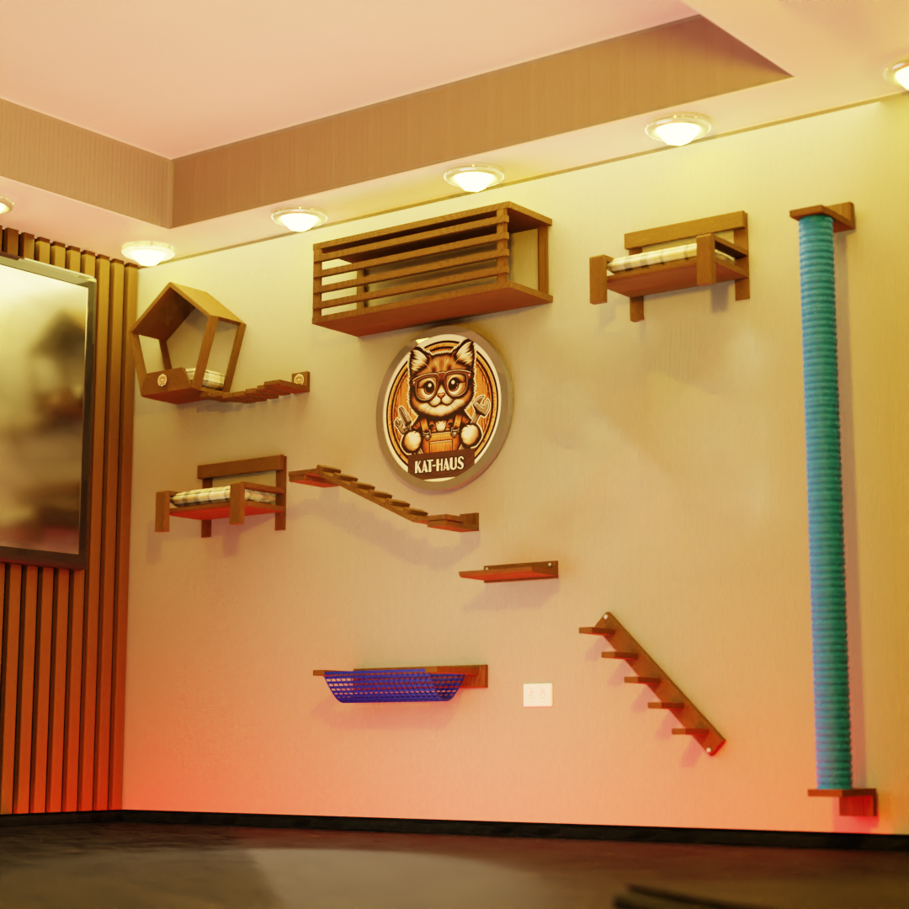

¿Cómo deseas continuar?
Circuito Pre-diseñado
Modelos probados, listos para adaptar a tu espacio. La forma más rápida y práctica de empezar a gatificar.
Explorar modelosDiseño Personalizado
La opción ideal para michis con gustos exigentes y humanos para quienes el presupuesto no es un obstáculo.
Solicitar diseño